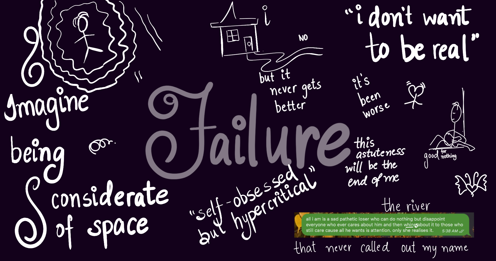

Journal 2: The River
Fixing Mistakes and a Poem
12 August 2022

Yaay! This pretentious asshole again, I’m so excited.
i fucked up. yeah that about sums it up thanks for reading.
i picked up a challenge that was beyond my capabilities. creating Andre. for hundred nights series. i mentioned in the last journal how i wanted to understand the mentality of victims of drug abuse before i go ahead and represent one. it’s not a schoolkid that im creating so i can’t just do dogshit and blame it on creative freedom. it’s a sensitive deal. it affects people. im well aware that the likelihood of someone who’s going through an addiction reading these posts and stories is rare. almost as rare as literally anyone else reading it. but i dont want to make something that even my present considers harmful. let alone my future.
im sorry, in case you liked the first two installments of the series. i wish i was a better person and could’ve been more understanding but im not. so im giving up on the series. it’s time. i cant keep pushing things off and off. or maybe i can but i dont like this feeling. i’ll find more ways to be sad. meanwhile, i’ll try my best to do something more. to make something that’s worth making.
would like to inform that i do have a copy of aesop’s fables so there might be some stuff on it’s way. i hope it’s alright enough. take care bug.